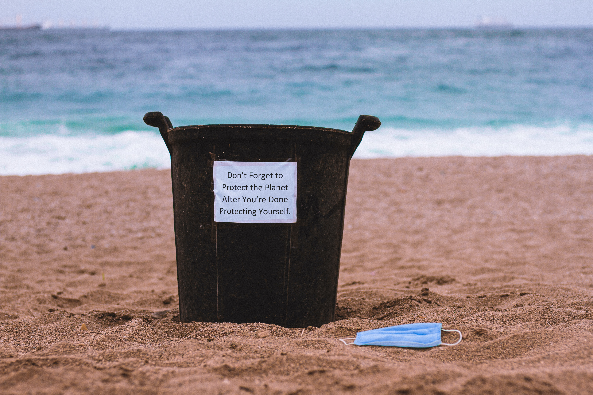
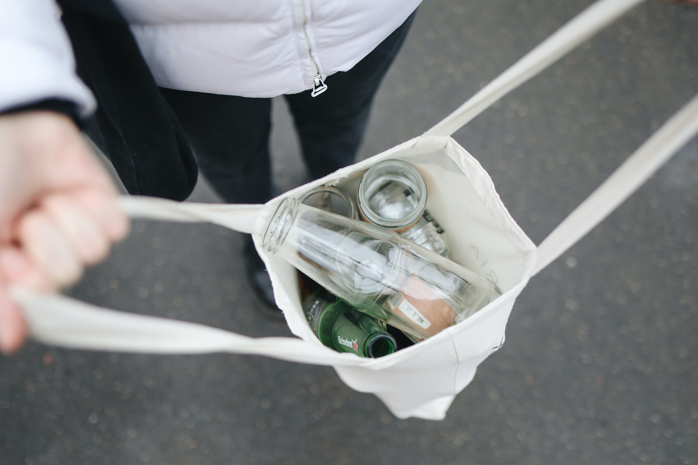
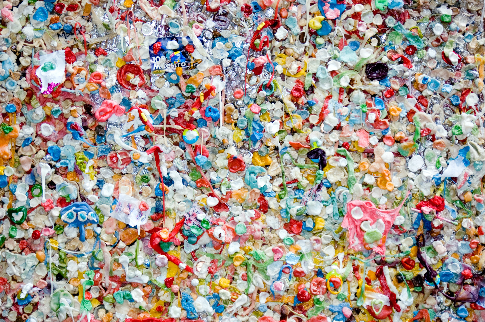

OUR WORK
Photos from our Events and Friends




We protect what we love!Planet!!!
Η Ανακύκλωση στις μέρες μας αποτελεί βασική προϋπόθεση για την προστασία του περιβάλλοντος και του μέλλοντός μας. Δεν είναι μια εφήμερη τάση της εποχής, αλλά αντίθετα, υποχρέωση κάθε πολιτισμένης κοινωνίας και κάθε πολίτη που σέβεται και εκτιμά τον εαυτό του. Κάθε κοινωνίας και κάθε πολίτη που έχει ως στόχο τη βελτίωση της ποιότητας ζωής του.Βασίζεται κυρίως στη πληθώρα υλικών της καθημερινότητάς μας, που μπορούν να επαναχρησιμοποιηθούν. Ο πληθυσμός αυξάνεται συνεχώς και αυξάνεται εξίσου η κατανάλωση προϊόντων, επομένως και τα απορρίμματα. Οπότε, γεννήθηκε η ανάγκη της ανακύκλωσης, αφού οι χωματερές γεμίζουν από σκουπίδια και πλέον ξεχειλίζουν. Τα υλικά που μπορούν να κατεργαστούν και να χρησιμοποιηθούν εκ νέου ξεχωρίζονται, συλλέγονται και αποτελούν πρώτη ύλη για ανακυκλωμένα προϊόντα.
Team UCYCLE
Είμαστε μια ομάδα φοιτητών που θέλουμε να συμβάλλουμε στην ανακύκλωση υλικών και στη προστασία του περιβάλλοντος. Ως όραμα έχουμε την μεγαλύτερη αξιοποίηση της ανακύκλωσης από όλους τους πολίτες, τη μείωση πλαστικών σε χωματερές, τη κατάργηση των πλαστικών μιας χρήσης στη χώρα μας και την ανάπτυξη της περιβαλλοντικής συνείδησης σε όλους.Είναι σημαντικό να καταλάβουν όλοι τι επιπτώσεις έχουν οι πράξεις μας στο πλανήτη. Όλοι μπορούμε να μαζέψουμε τις συσκευασίες από αντικείμενα που χρησιμοποιούμε καθημερινά και να μην πετάμε γύρω μας σκουπίδια. Δεν μπορούμε να αλλάξουμε την περιβαλλοντική ρύπανση, έχει γίνει δυστυχώς. Αυτό που μπορούμε να κάνουμε είναι να περιορίσουμε το πλαστικό στη ζωή μας ή τουλάχιστον να το ανακυκλώνουμε. Μικρά βήματα, αλλά σωστά. Ο κάθε πολίτης ξεχωριστά είναι ένα βήμα για ένα καλύτερο περιβάλλον. Αφορά τη ζωή και την υγεία μας, όλοι μπορούμε να κάνουμε κάτι. Ως στόχο έχουμε αρχικά να μπορέσουμε να καλύψουμε όσο περισσότερες πόλεις της Ελλάδος κι αργότερα να μπορέσουμε να επεκταθούμε παγκοσμίως. Η προβολή επίσης νέων εταιρειών που αξιοποιούν τα ανακυκλωμένα υλικά, θα μπορέσει να ωθήσει περισσότερες επιχειρήσεις να ανακυκλώσουν, να αναπτυχθούν σε αυτόν το τομέα και να συνεργαστούν μαζί μας. Κάθε πολίτης μπορεί να χρησιμοποιεί την εφαρμογή που έχει η Ucycle, ώστε να βρίσκει τα σημεία διαλογής, να προσφέρει τα ανακυκλώσιμα υλικά που έχει συλλέξει είτε σε κάποιον υπάλληλο είτε σε ειδικά διαμορφωμένο μηχάνημα και να λαμβάνει το χρηματικό ποσό που αντιστοιχεί στο είδος και τη ποσότητα των υλικών. Η εφαρμογή απευθύνεται σε οποιονδήποτε διαθέτει τραπεζικό λογαριασμό και κινητό τηλέφωνο.
What we achieved this year:
Had more people joining our eco friendly and rewarding cause
Extended our services to new areas
Increased our customers' will to recycle
Having a passion for saving our planet
Photos from our Events and Friends
We'd love your feedback!
"Recycling takes a little effort on your part, but makes a big difference to the world!"